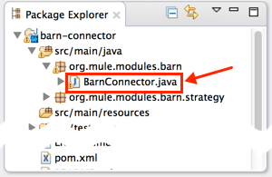
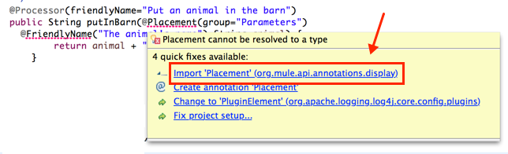
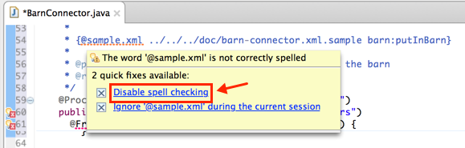
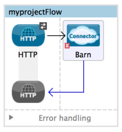
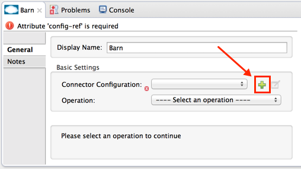
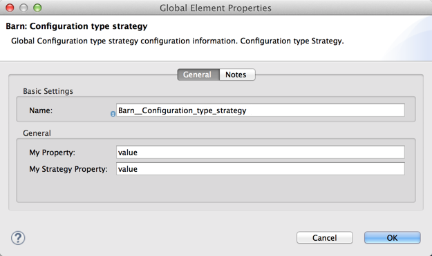
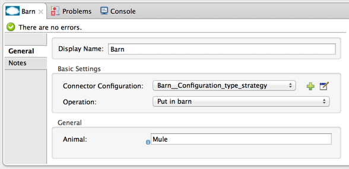
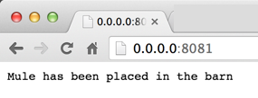

Tutorial - Barn Connector
This document describes the steps needed to build, install, and test a connector in Anypoint Studio.
The following tutorial describes how to create a simple connector that displays "Mule has been placed in the barn" in a browser. You can use the user interface for the connector in Anypoint Studio to change which animal is put in the barn.
Before Creating a Connector
-
Install:
-
Start Anypoint Studio.
-
Configure Maven:
-
Click Anypoint Studio > Preferences > Anypoint Studio > Maven Settings. In DevKit 3.7, when you first create a connector, if Maven is not configured, you are prompted to install it.
-
-
Install the DevKit Plugin:
-
Click Install New Software.
-
Click Work with > Anypoint Addons Update Site > Anypoint Devkit Plugin.
-
Click Next, Finish, and restart Studio.
-
Creating a Connector Project
-
Create your initial Barn connector. Use File > New > Project > Anypoint Connector Project. Name the connector Barn. You can leave all other fields the same. Click Finish. You can ignore any warning messages in the Studio Console.
-
Review the scaffolded connector:
/** * (c) 2003-2015 MuleSoft, Inc. The software in this package is published under the terms of the CPAL v1.0 license, * a copy of which has been included with this distribution in the LICENSE.md file. */ package org.mule.modules.barn; import org.mule.api.annotations.ConnectionStrategy; import org.mule.api.annotations.Connector; import org.mule.api.annotations.Configurable; import org.mule.api.annotations.Processor; import org.mule.api.annotations.param.Default; import org.mule.modules.barn.strategy.ConnectorConnectionStrategy; /** * Anypoint Connector * * @author MuleSoft, Inc. */ @Connector(name="barn", schemaVersion="1.0", friendlyName="Barn") public class BarnConnector { /** * Configurable */ @Configurable @Default("value") private String myProperty; @ConnectionStrategy ConnectorConnectionStrategy connectionStrategy; /** * Custom processor * * {@sample.xml ../../../doc/barn-connector.xml.sample barn:my-processor} * * @param content Content to be processed * @return Some string */ @Processor public String myProcessor(String content) { /* * MESSAGE PROCESSOR CODE GOES HERE */ return content; } /** * Set property * * @param myProperty My property */ public void setMyProperty(String myProperty) { this.myProperty = myProperty; } /** * Get property */ public String getMyProperty() { return this.myProperty; } public ConnectorConnectionStrategy getConnectionStrategy() { return connectionStrategy; } public void setConnectionStrategy(ConnectorConnectionStrategy connectionStrategy) { this.connectionStrategy = connectionStrategy; } }
Coding a Connector
To code the connector:
-
In Studio, open the main Java file,
src/main/java/org/mule/modules/barn/BarnConnector.java -
Paste the following code in the connector class, before the final closing curly brackets, and after the existing
@Processorblock:/** * Custom processor that places an animal in the barn. * * {@sample.xml ../../../doc/barn-connector.xml.sample barn:putInBarn} * * @param animal Name of the animal to be place in the barn * @return returns processed message */ @Processor(friendlyName="Put an animal in the barn") public String putInBarn(@Placement(group="Parameters") @FriendlyName("The animal's name") String animal) { return animal + " has been placed in the barn"; }The path name in the
@Samplestatement indicates the path to the Javadoc *.xml.sample file in Studio–it’s not a filesystem path. For each Javadoc sample file in your connector, specify corresponding statements in the xml.sample file.
The line starting with@Processoridentifies the processor function, which specifies the user interface for the connector.
The line starting with@FriendlyNameindicates what the UI elements that display in the browser when the connector runs in Anypoint Studio.This code changes the operation name to "Put an animal in the barn", and changes the Animal prompt to "The animal’s name". After inserting,
@Placementand@FriendlyNameare underscored as an error condition. Mouse over each annotation and select the import command from the popup menu to add import commands to your connector:
-
Add loading statements for future Javadoc documentation in your connector by providing map-payload statements:
-
Open doc/barn-connector.xml.sample:
<!-- BEGIN_INCLUDE(barn:my-processor) --> <barn:my-processor config-ref="" content="#[map-payload:content]" /> <!-- END_INCLUDE(barn:my-processor) --> -
Include one BEGIN/END block for each
@Processorstatement block in your connector. For the second@Processorstatement block, add these lines:<!-- BEGIN_INCLUDE(barn:my-processor) --> <barn:put-in-barn config-ref="" animal="#[map-payload:content]" /> <!-- END_INCLUDE(barn:my-processor) --> -
Save this file.
-
-
Disable spell checking by mousing over text with a red underline and clicking Disable spell checking:
 -
The completed connector code appears as follows:
View the Completed Connector’s Code:
/** * (c) 2003-2014 MuleSoft, Inc. The software in this package is published under the terms of the CPAL v1.0 license, * a copy of which has been included with this distribution in the LICENSE.md file. */ package org.mule.modules.barn; import org.mule.api.annotations.ConnectionStrategy; import org.mule.api.annotations.Connector; import org.mule.api.annotations.Configurable; import org.mule.api.annotations.Processor; import org.mule.api.annotations.display.FriendlyName; import org.mule.api.annotations.display.Placement; import org.mule.api.annotations.param.Default; import org.mule.modules.barn.strategy.ConnectorConnectionStrategy; /** * Anypoint Connector * * @author MuleSoft, Inc. */ @Connector(name="barn", schemaVersion="1.0", friendlyName="Barn") public class BarnConnector { /** * Configurable */ @Configurable @Default("value") private String myProperty; @ConnectionStrategy ConnectorConnectionStrategy connectionStrategy; /** * Custom processor * * {@sample.xml ../../../doc/barn-connector.xml.sample barn:my-processor} * * @param content Content to be processed * @return Some string */ @Processor public String myProcessor(String content) { /* * MESSAGE PROCESSOR CODE GOES HERE */ return content; } /** * Custom processor that places an animal in the barn. * * {@sample.xml ../../../doc/barn-connector.xml.sample barn:putInBarn} * * @param animal Name of the animal to be place in the barn * @return returns processed message */ @Processor(friendlyName="Put an animal in the barn") public String putInBarn(@Placement(group="Parameters") @FriendlyName("The animal's name") String animal) { return animal + " has been placed in the barn"; } /** * Set property * * @param myProperty My property */ public void setMyProperty(String myProperty) { this.myProperty = myProperty; } /** * Get property */ public String getMyProperty() { return this.myProperty; } public ConnectorConnectionStrategy getConnectionStrategy() { return connectionStrategy; } public void setConnectionStrategy(ConnectorConnectionStrategy connectionStrategy) { this.connectionStrategy = connectionStrategy; } }
Identifying Your Connector in Studio
When you create an Anypoint Connector Project, Studio creates the @Connector annotation containing a name, schema version, and friendly name.
Connectors use the @Connector annotation to describe the contents of a connector. The friendlyName parameter defines the connector’s label in the Studio palette.
@Connector(name="barn", schemaVersion="1.0", friendlyName="Barn")After you install your connector in Studio, when users create a Mule Project, the friendlyName identifies your connector:
Installing Your Connector
-
Install your project: Right-click the connector project’s name in Package Explorer, and click Anypoint Connector > Install or Update.
-
Follow the prompts to accept the details, the terms of the license agreement, and installing software with unsigned content. Restart Studio for the changes to take effect. The connector then becomes available to include in a Mule Project.
Creating a Mule Project With Your Connector
-
After Studio restarts, create a Mule project using File > New > Mule Project.
-
Search for "http" and drag the HTTP connector to the canvas. The default settings are correct.
-
Search for "barn" and drag the Barn connector to the canvas.
The canvas appears as:To configure the Barn connector:
-
Click the green plus:
 -
Ensure that the screen appears as follows and click OK:
The two values for My Property and My Strategy Property are supplied by the default connector. You can ignore these.
-
In the first screen, click Operation and click Put in barn. In the Animal field specify a name such as the
Muleanimal:
-
-
Deploy your Mule project by clicking Run > Run As > Mule Application.
-
Open a browser and set the address to http://0.0.0.0:8081 - The browser displays:
 -
You can change the Animal value, save your project, and refresh your browser to put other animals in the barn.
See Also
-
NEXT STEP: Implement authentication in your connector
-
More tutorials? See Anypoint Connector Examples